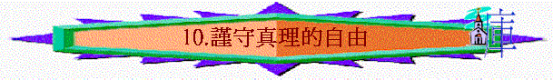

第十課 謹守真理的自由
〔五：１－１２〕
本課要旨：在前面三、四章中，保羅已多方證明因信稱義的真理，有從個人經歷去辯明，亦多次引用舊約經文、以歷史和字義解經證明律法與恩典之分別。使信徒明白他們已從律法中釋放出來，得自由了。既是自由，如何以此真理原則去應用於生活中呢﹖第五至六章正是討論此問題。保羅首先提醒加拉太信徒，不要再作律法的奴僕，並提防那些假弟兄。
１．昔日我們是受甚麼的綑綁呢﹖是誰釋放了我們﹖〔五：１；羅八：２－４〕
２．我們既被釋放，那麼應有何態度要注意的呢﹖〔五：１〕
ａ．消極方面：
ｂ．積極方面：
３．請分享你會如何「站立得穩」，免入加拉太人所走錯的路中。
４．「奴僕的軛」與「基督的軛」有何分別﹖〔五：１；太十一：２９〕
５．行割禮本來只是一件小事，為何會引致與基督無分的地步呢﹖試想今天的異端之所以被稱為異端，是否有相同之處呢﹖〔五：２〕
６．「欠著行律法的債」是甚麼意思﹖〔五：３；雅二：１０〕
７．加拉太人會否從恩典中墜落呢﹖我們會否得救後再次失落救恩呢﹖〔五：４〕（註一）
８．人要怎樣生活才常在神的恩典中﹖〔五：５－６〕（註二）
ａ．
ｂ．
ｃ．
９．我們運用信心生活比靠行律法生活有甚麼長處﹖有何功效﹖〔五：５－６〕（註三）
10．保羅在此再質問加拉太人甚麼﹖〔五：７〕
ａ．
ｂ．
11．關於那些人的勸導：〔五：８－９；太十二：３３；十六：６；路十三：２１〕
ａ．是出於神還是出於魔鬼﹖何以見得﹖
ｂ．有何影響﹖
12．保羅向那兩類的人表現出那兩種截然不同的反應﹖我們可以效法嗎﹖〔五：１０－１２〕
ａ．
ｂ．
13．十架有何討厭的地方﹖〔五：１１〕（註四）
14．你認為今天教會最大的危機是甚麼﹖是道德上的犯錯呢﹖還是真理上的犯錯呢﹖
第十課附註：
註一：「隔絕」原文意為「脫離」。
註二：「等候所盼望的義」庫譯作「等候公義的盼望」。
註三：「生發」原文是「運行」、「作工」之意。
註四：「討厭的地方」原文是「絆腳石」之意。
參考答案
第十課：謹守真理的自由
１．受律法、罪和死的捆綁，現在是基督釋放了我們。
２．ａ．消極方面：不再被奴僕的軛挾制，不再返回行律法之路。ｂ．積極方面：要站立得穩。
４．奴僕的軛即律法的軛，它發出的要求是人無法擔當的，不能使人得救，靠它來稱義反只會成為它的奴僕。而基督的軛是輕省的、容易的，祂的軛帶來不是難當的壓力，卻是得著真正的安息。５．割禮本來是小事，因保羅也說受割禮與不受割禮都是無關重要的〔五：６；六：１５〕。但那些攪擾加拉太人者，並非叫他們不信耶穌，而是在信主之外再加上受割禮才算是完全正是走回行律法稱義的路上。人在基督救恩上加上人的行為，是一極大的錯誤，反而只會導致與基督無分的嚴重後果。今天異端可怕之處正是在此。
６．意思是若一個人若以為受割禮是必需的，而宣揚律法主義，他也就有責任去守其餘律法的部份，即全守律法中的每一條；若犯了一條，就已是犯了全部律法了。
７．這是指那些靠行律法稱義的人而言，因為加拉太人是已於聖靈有分〔三：３〕，不會失去救恩。我們得救後更不會再次失去救恩！神必拯救到底〔來七：２５；約十：２８－２９〕。關於此問題進深的探討，請參考陳終道著「是否永不滅亡﹖」一書（天道）。
８．ａ．靠聖靈而活；ｂ．憑信心而活；ｃ．常存盼望。
９．運用信心生活能使我們生發愛心。行律法、受割禮只是外面的改變，但信心乃是內心的改變。真正的信心必有生出愛心的功效，所以要常常用信心去生活、行事、事奉，便不留於習慣化、單有外表的行為了。
10．ａ．質問是誰欄阻他們不行真理呢﹖
ｂ．指出他們正行在不順從真理的路上。
11．ａ．是出於魔鬼。因為從他們道理的錯誤（果子），便可知道其根源是出於誰的了。
ｂ．像麵酵一樣，初雖是很小的，影響卻會越來越大，甚至全教會（全團）。
12．ａ．向主內的弟兄，他是盡力的、心裡逼切的多方勸勉、矯正。
ｂ．向那些傳毀滅性教訓的人，他則是不留情的、不能容忍的嚴責，為道爭辯。我們應效法他有這樣逼切的心，既愛教會又為道逼切。
13．保羅說他只傳基督並祂釘十字架〔林前二：２〕，因人只須單單信靠主耶穌便得著稱義。這使到律法主義者在宗教上可以自誇、憑藉的地方也沒有了，更否定了人靠行為的義。正因這原因，十字架對猶太人來說是討厭的，單傳十字架和基督的保羅也因此受盡他們的逼迫。14．最真理上的出錯，因這是根源的錯誤。很多信徒在道德上犯錯，大多數是先因為其真理根基的軟弱、出錯，以致容易在道德上也犯錯了。事實上很多人在道德上的犯錯正是顯出其裡面真理的犯錯。因此我們應加緊注重我們真理的根基。